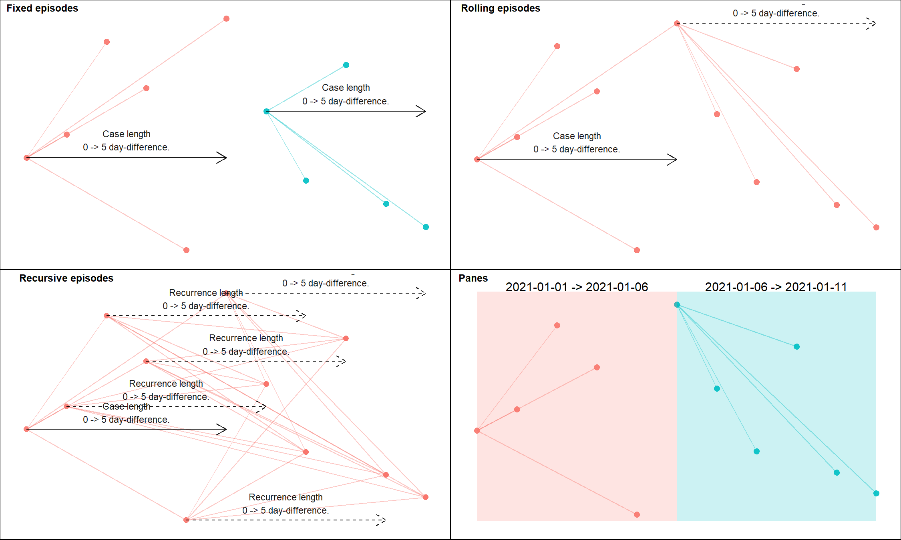
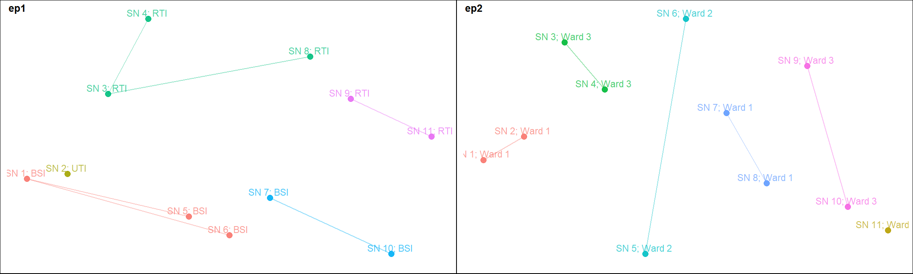
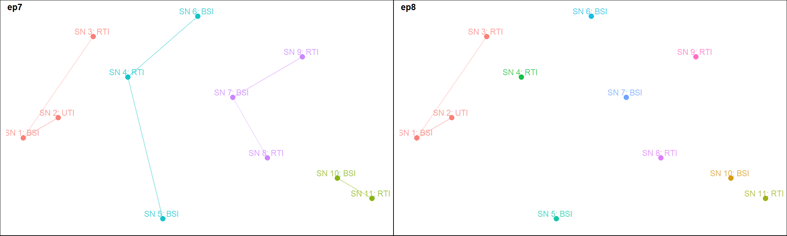
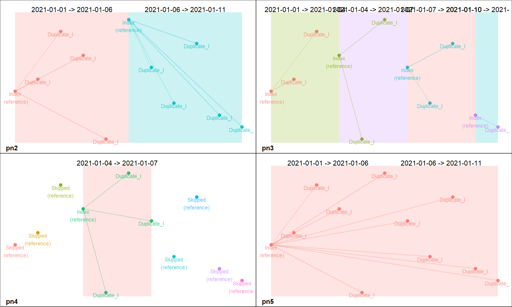
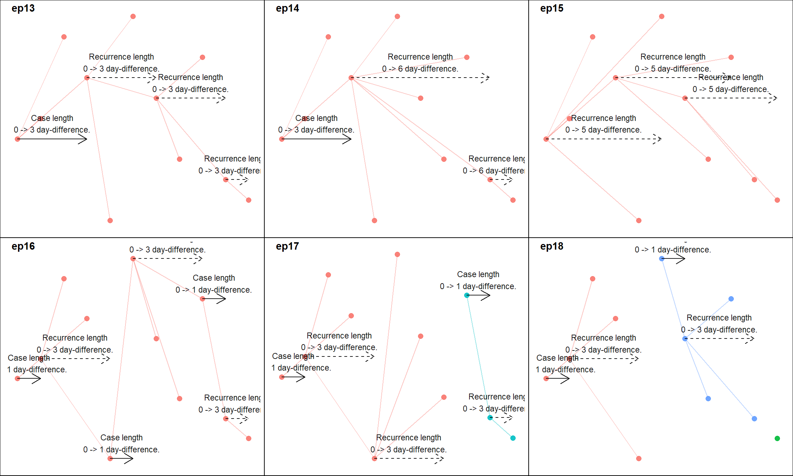
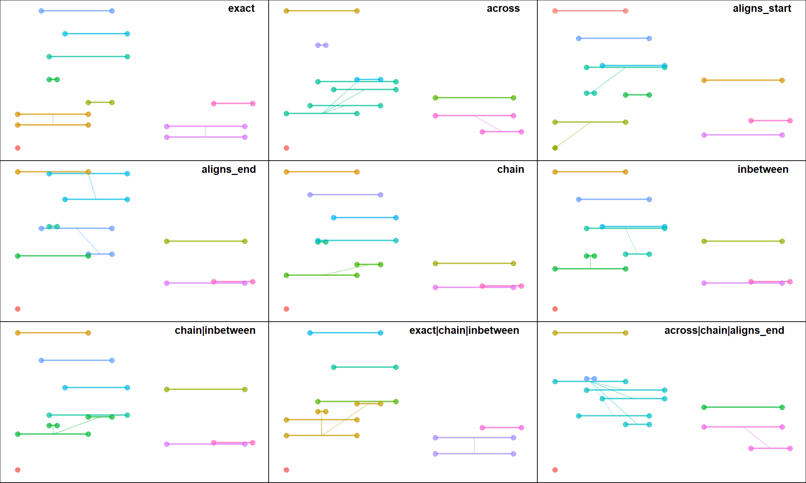
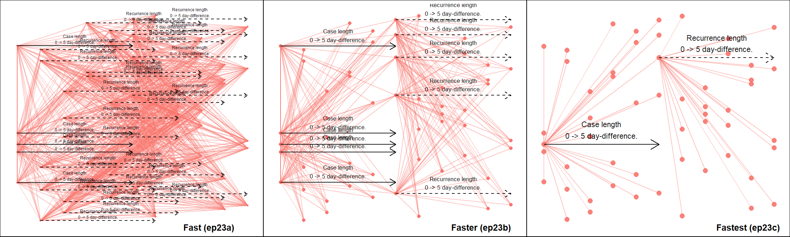
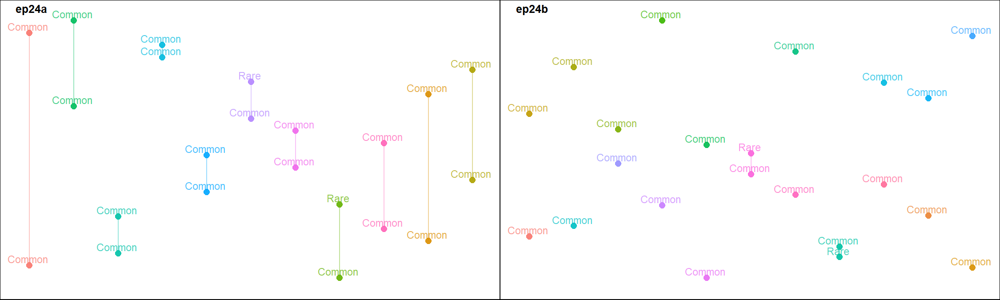

In epidemiological analyses an exact distinction between temporal events is not always possible. Therefore, static but reasonable cut-offs are used to distinguish one case of an event from another. This is an important aspect of most case definitions. For example, distinguishing repeat or recurrent infections in a patient from the first occurrence of that infection.
Scripting such case definitions in R can be challenging. episodes() and partitions() provide a convenient but flexible solution to this. It links events into a temporal sequence, creating a unique group identifier with useful information about each group. These identifiers can then be used for record deduplication or further analyses.
The group identifiers created by episodes() and partitions() are called episodes (epid class) and panes (pane class) respectively. episodes() creates three type of episodes - "fixed", "rolling" and "recursive". In diyar, a fixed episode is created by linking an index event to other events occurring within a specified period from of it. This results in a "Case" (index event) and related duplicate events ("Duplicate_C"). In a rolling episode, the process is repeated using another event from the existing episode as the reference event. This results in a "Recurrent" event and additional duplicate ("Duplicate_R") events. Here, this repetition is referred to as a recurrence. Unless specified, recurrences will continue indefinitely until there are no more events within the period of recurrence. When this happens, the chain of recurrence ends and so does the episode. A recursive episode is similar to a rolling episode except that every event in the existing episode is used as a reference event. On the other hand, a pane is created by separating events into set periods in time. The events in a pane have no relationship with each other, other than occurring in the same period or numeric interval. See the figure and example below.
# Events event_dt <- seq(from = as.Date("2021-01-01"), to = as.Date("2021-01-11"), by = 1) s_data <- data.frame(date = event_dt) # Attribute 1 - Source of infection attr_1 <- c("BSI", "UTI", "RTI", "RTI", "BSI", "BSI", "BSI", "RTI", "RTI", "BSI", "RTI") # Attribute 2 - Location attr_2 <- c("Ward 1", "Ward 1", "Ward 3", "Ward 3", "Ward 2", "Ward 2", "Ward 1", "Ward 1", "Ward 3","Ward 3", "Ward 2") s_data$attr <- attr_1 # Fixed episodes s_data$ep1 <- episodes(event_dt, case_length = 5, episode_type = "fixed") # Rolling episodes s_data$ep2 <- episodes(event_dt, case_length = 5, episode_type = "rolling", group_stats = TRUE, data_source = attr_1) # Recursive episodes s_data$ep3 <- episodes(event_dt, case_length = 5, episode_type = "recursive") # Panes s_data$pn1 <- partitions(event_dt, length.out = 2, separate = TRUE) # Identifiers s_data #> date attr ep1 ep2 ep3 pn1 #> 1 2021-01-01 BSI E.1 (C) E.1 2021-01-01 -> 2021-01-11 (C) E.1 (C) PN.1 (I) #> 2 2021-01-02 UTI E.1 (D) E.1 2021-01-01 -> 2021-01-11 (D) E.1 (D) PN.1 (D) #> 3 2021-01-03 RTI E.1 (D) E.1 2021-01-01 -> 2021-01-11 (D) E.1 (D) PN.1 (D) #> 4 2021-01-04 RTI E.1 (D) E.1 2021-01-01 -> 2021-01-11 (D) E.1 (D) PN.1 (D) #> 5 2021-01-05 BSI E.1 (D) E.1 2021-01-01 -> 2021-01-11 (D) E.1 (D) PN.1 (D) #> 6 2021-01-06 BSI E.1 (D) E.1 2021-01-01 -> 2021-01-11 (D) E.1 (D) PN.6 (I) #> 7 2021-01-07 BSI E.7 (C) E.1 2021-01-01 -> 2021-01-11 (R) E.1 (R) PN.6 (D) #> 8 2021-01-08 RTI E.7 (D) E.1 2021-01-01 -> 2021-01-11 (D) E.1 (D) PN.6 (D) #> 9 2021-01-09 RTI E.7 (D) E.1 2021-01-01 -> 2021-01-11 (D) E.1 (D) PN.6 (D) #> 10 2021-01-10 BSI E.7 (D) E.1 2021-01-01 -> 2021-01-11 (D) E.1 (D) PN.6 (D) #> 11 2021-01-11 RTI E.7 (D) E.1 2021-01-01 -> 2021-01-11 (D) E.1 (D) PN.6 (D)
Each type of identifier has as.data.frame and as.list methods for easy access to their components.
# Components of an episode identifier as.data.frame(s_data$ep2) #> epid sn wind_nm case_nm dist_wind_index dist_epid_index epid_total #> 1 1 1 Case Case 0 days 0 days 11 #> 2 1 2 Case Duplicate_C 1 days 1 days 11 #> 3 1 3 Case Duplicate_C 2 days 2 days 11 #> 4 1 4 Case Duplicate_C 3 days 3 days 11 #> 5 1 5 Case Duplicate_C 4 days 4 days 11 #> 6 1 6 Case Duplicate_C 5 days 5 days 11 #> 7 1 7 Recurrence Recurrent 1 days 6 days 11 #> 8 1 8 Recurrence Duplicate_R 2 days 7 days 11 #> 9 1 9 Recurrence Duplicate_R 3 days 8 days 11 #> 10 1 10 Recurrence Duplicate_R 4 days 9 days 11 #> 11 1 11 Recurrence Duplicate_R 5 days 10 days 11 #> iteration wind_id1 epid_start epid_end epid_length epid_dataset #> 1 1 1 2021-01-01 2021-01-11 10 days BSI,RTI,UTI #> 2 1 1 2021-01-01 2021-01-11 10 days BSI,RTI,UTI #> 3 1 1 2021-01-01 2021-01-11 10 days BSI,RTI,UTI #> 4 1 1 2021-01-01 2021-01-11 10 days BSI,RTI,UTI #> 5 1 1 2021-01-01 2021-01-11 10 days BSI,RTI,UTI #> 6 1 1 2021-01-01 2021-01-11 10 days BSI,RTI,UTI #> 7 2 6 2021-01-01 2021-01-11 10 days BSI,RTI,UTI #> 8 2 6 2021-01-01 2021-01-11 10 days BSI,RTI,UTI #> 9 2 6 2021-01-01 2021-01-11 10 days BSI,RTI,UTI #> 10 2 6 2021-01-01 2021-01-11 10 days BSI,RTI,UTI #> 11 2 6 2021-01-01 2021-01-11 10 days BSI,RTI,UTI
Figure 1 gives a visual representation of the difference between these identifiers.
Figure 1: Episodes and panes

The main considerations in a case definition are accounted for in these functions using a flexible and modular approach. Therefore, most considerations can be addressed independently or in a compounding manner. These considerations are summarised below.
Additional matching criteria (separate from temporal links) can be implemented by the strata, case_sub_criteria and recurrence_sub_criteria arguments. strata introduces a blocking attribute which forces separate episodes and panes for different subsets of the dataset.
The figure and example below show how the strata argument is used.
# Matching clinical criteria ep1 <- episodes(event_dt, strata = attr_1, case_length = 5) # Matching geographical criteria ep2 <- episodes(event_dt, strata = attr_2, case_length = 5)
Figure 2: Using a strata to specify additional criteria for linked events 
In contrast, the case_sub_criteria and recurrence_sub_criteria arguments apply a set of matching criteria for attributes associated with the events being compared. These arguments take a sub_criteria object. sub_criteria objects and how they are used are described in greater detail in vignette("links"). In summary, they contain a set of atomic vectors as attributes, a set of corresponding logical tests for each attribute and another set of logical tests for the equivalence of values in each attribute. The evaluation of a sub_criteria is recursive and so allows for nested conditions.
The figure and example below show how the case_sub_criteria and recurrence_sub_criteria arguments are used.
# Attribute 3 - Patient sex attr_3 <- c(rep("Female", 9), "Male", "Female") # Sub-criteria 1 - Matching source of infection OR patient location sub_cri_1 <- sub_criteria(attr_1, attr_2, operator = "or") # Sub-criteria 2 - Matching source of infection AND patient location sub_cri_2 <- sub_criteria(attr_1, attr_2, operator = "and") # Sub-criteria 3 - (Matching source of infection AND patient location) OR (Matching patient sex) sub_cri_3 <- sub_criteria(sub_cri_2, attr_3, operator = "or") # Sub-criteria 4 - (Matching source of infection AND patient location) AND (Matching patient sex) sub_cri_4 <- sub_criteria(sub_cri_2, attr_3, operator = "and") ep3 <- episodes(event_dt, case_length = 5, case_sub_criteria = sub_cri_1) ep4 <- episodes(event_dt, case_length = 5, case_sub_criteria = sub_cri_2) ep5 <- episodes(event_dt, case_length = 5, case_sub_criteria = sub_cri_3) ep6 <- episodes(event_dt, case_length = 5, case_sub_criteria = sub_cri_4)
Figure 3: Using a sub_criteria to specify additional criteria for linked events
Using a sub_criteria incurs additional processing time therefore, it should be reserved for situations when a blocking attribute would not suffice or more complex matching criteria are required. The figure and example below show some examples of this.
# record id rd_id <- 1:length(attr_1) # Condition 1 - Each episode must include BSI events cri_funx_1 <- function(x, y){ splts <- split(x$attr, y$rd_id) splts_lgk <- lapply(splts, function(x){ "RTI" %in% x }) splts_lgk <- unlist(splts_lgk) splts_lgk[match(y$rd_id, names(splts))] } # Condition 2 - Each episode must include >=3 different sources of infection cri_funx_2 <- function(x, y){ splts <- split(x$attr, y$rd_id) splts_lgk <- lapply(splts, function(x){ length(x[!duplicated(x)]) >= 3 }) splts_lgk <- unlist(splts_lgk) splts_lgk[match(y$rd_id, names(splts))] } # Equivalence - Logical test for matching attributes eqv_funx <- function(x, y){ x$rd_id == y$rd_id } # Sub-criteria sub_cri_5 <- sub_criteria(list(attr = attr_1, rd_id= rd_id), match_funcs = cri_funx_1, equal_funcs = eqv_funx) sub_cri_6 <- sub_criteria(list(attr = attr_1, rd_id= rd_id), match_funcs = cri_funx_2, equal_funcs = eqv_funx) ep7 <- episodes(event_dt, case_length = 2, episode_type = "fixed", case_sub_criteria = sub_cri_5) ep8 <- episodes(event_dt, case_length = 2, episode_type = "fixed", case_sub_criteria = sub_cri_6)
Figure 4: Using case_sub_criteria to specify complex criteria for linked events 
This is best handled by partitions(). See the examples below.
# Group events into 2 equal parts over the strata's duration pn2 <- partitions(event_dt, length.out = 2, separate = TRUE) # Group events into 3-day sequences over the strata's duration pn3 <- partitions(event_dt, by = 3, separate = TRUE) # Group events that occured in a specified period of time pn4 <- partitions(event_dt, window = number_line(event_dt[4], event_dt[7])) # Group events from separate periods into one pane pn5 <- partitions(event_dt, length.out = 2, separate = FALSE)
Figure 5: Using partitions 
The from_last argument specifies the direction of episode tracking, while custom_sort specifies a custom preference for selecting index events. The combination of both allows users to choose which event or type of events should be used as the index event. See the examples below.
# Preference for selecting index events c_sort <- c(rep(2, 5), 1, rep(2, 5)) # Episodes are 6 days (5-day difference) after the earliest event ep9 <- episodes(event_dt, case_length = 5, episodes_max = 1) # Episodes are 6 days (5-day difference) before the most recent event ep10 <- episodes(event_dt, case_length = 5, episodes_max = 1, from_last = TRUE) # Episodes are 6 days (5-day difference) after the 6th event ep11 <- episodes(event_dt, case_length = 5, custom_sort = c_sort, episodes_max = 1) # Episodes are 6 days (5-day difference) before or after the 6th event ep12 <- episodes(event_dt, case_length = number_line(-5, 5), custom_sort = c_sort, episodes_max = 1)
Figure 6: Selecting index events when tracking episodes
The episode_type argument can be used to request for rolling or recursive episodes which permit recurrence. reference_event is used to specify which of the events in the existing episode is considered the reference event for the next recurrence. case_for_recurrence determines if the initial occurrence of the event and subsequent recurrences are to be treated in the same way i.e. does recurrent events trigger an initial occurrence of their own?
# Episodes are 4 days (3-day difference) after the earliest event with # repeat occurrence within 4 days of the last event considered recurrences not duplicates ep13 <- episodes(event_dt, case_length = 3, episode_type = "rolling") # Episodes are 4 days (3-day difference) after the earliest event with # repeat occurrence within 7 days of the last event considered recurrences not duplicates ep14 <- episodes(event_dt, case_length = 3, recurrence_length = 6, episode_type = "rolling") # Episodes are 3 days (2-day difference) after the earliest event with # repeat occurrence within 6 days of the first event considered recurrences not duplicates ep15 <- episodes(event_dt, case_length = 2, recurrence_length = 5, episode_type = "rolling", reference_event = "first_record") # Episodes are 2 days (1-day difference) after the earliest event with # repeat occurrence within 4 days of the last event considered recurrences not duplicates and # the possibility of each repeat occurrence spawning a new occurrence as if it was the initial case ep16 <- episodes(event_dt, case_length = 1, recurrence_length = 3, episode_type = "rolling", case_for_recurrence = TRUE) # Episodes are 2 days (1-day difference) after the earliest event with # repeat occurrence within 4 days of the last event considered recurrences not duplicates and # can't recur more than twice ep17 <- episodes(event_dt, case_length = 1, recurrence_length = 3, episode_type = "rolling", rolls_max = 2) # Episodes are 2 days (1-day difference) after the earliest event with # repeat occurrence within 4 days of the last event considered recurrences not duplicates and # can't recur more than once times and the selection of index events is recursive ep18 <- episodes(event_dt, case_length = 1, recurrence_length = 3, episode_type = "recursive", rolls_max = 1)
Figure 7: Recurrence of the index event 
Multiple case_length or recurrence_length can be used by providing a list of ranges (number_line()), while the case_length_total and recurrence_length_total arguments specifies how many such temporal links are required for an episode.
# Each episodes requires at least 5 temporal links ep19 <- episodes(event_dt, case_length = list(number_line(2, 2), number_line(5, 7), number_line(9, 20)), episode_type = "fixed", case_length_total = 5, skip_if_b4_lengths = TRUE) # Each episodes requires at least 2 temporal links ep20 <- episodes(event_dt, case_length = list(number_line(2, 2), number_line(5, 7), number_line(9, 20)), episode_type = "fixed", case_length_total = 2, skip_if_b4_lengths = TRUE)
Figure 8: Lags between index and repeat events
It’s possible to track episodes among events with known start and end points, instead of those occurring at a single point in time. It is worth noting that the reference point for such events is their end point. Therefore, using a case_length of 1 when working with such events is interpreted as 2 days (1-day difference) after the end point of the interval. By default, other events that occur on or after the start point but before the end point of the index event will not be captured. If this is required, use index_window() to get the range required to capture such events, and supply it to the case_length or recurrence_length arguments. See the figure and examples below.
# Dummy data of hospital stays dfr <- diyar::hospital_admissions[c("admin_dt", "discharge_dt")] dfr$admin_period <- number_line(dfr$admin_dt, dfr$discharge_dt) # Group overlapping hospital stays dfr$ep_len1 <- index_window(dfr$admin_period) dfr$ep21 <- episodes(date = dfr$admin_period, case_length = dfr$ep_len1) # Group overlapping hospital stays and those within 21 days of the end point of an index hospital stay dfr$ep_len2 <- expand_number_line(index_window(dfr$admin_period), 20, "right") dfr$ep22 <- episodes(date = dfr$admin_period, case_length = dfr$ep_len2) dfr[c("admin_period", "ep_len1", "ep_len2", "ep21", "ep22")] #> admin_period ep_len1 ep_len2 ep21 ep22 #> 1 2019-01-01 == 2019-01-01 0 == 0 0 -> 20 E.2 (D) E.2 (D) #> 2 2019-01-01 -> 2019-01-10 -9 -> 0 -9 -> 20 E.2 (C) E.2 (C) #> 3 2019-01-10 -> 2019-01-13 -3 -> 0 -3 -> 20 E.2 (D) E.2 (D) #> 4 2019-01-05 -> 2019-01-06 -1 -> 0 -1 -> 20 E.2 (D) E.2 (D) #> 5 2019-01-05 -> 2019-01-15 -10 -> 0 -10 -> 20 E.2 (D) E.2 (D) #> 6 2019-01-07 -> 2019-01-15 -8 -> 0 -8 -> 20 E.2 (D) E.2 (D) #> 7 2019-01-04 -> 2019-01-13 -9 -> 0 -9 -> 20 E.2 (D) E.2 (D) #> 8 2019-01-20 -> 2019-01-30 -10 -> 0 -10 -> 20 E.8 (C) E.2 (D) #> 9 2019-01-26 -> 2019-01-31 -5 -> 0 -5 -> 20 E.8 (D) E.2 (D) #> 10 2019-01-01 -> 2019-01-10 -9 -> 0 -9 -> 20 E.2 (D) E.2 (D) #> 11 2019-01-20 -> 2019-01-30 -10 -> 0 -10 -> 20 E.8 (D) E.2 (D)
Figure 9: Tracking episodes of overlapping intervals
Currently, the diyar packages recognises 7 mutually exclusive and 2 mutually inclusive ways a pair of intervals can overlap. Please see vignette("number_line") for more details about this. Using case_overlap_methods and recurrence_overlap_methods, the episode tracking process can be made to only capture intervals that overlap by specific methods. See the example below.
# Wrapper function for a fixed episode episodes_wf <- function(x){ epids <- episodes(date = dfr$admin_period, sn = dfr$rd_id, case_length = index_window(dfr$admin_period), case_overlap_methods = x) return(epids) } # Methods methods <- list( # Identical intervals exact = "exact", # Intervals with their start or end points within another across = "across", # Intervals with aligned start points aligns_start = "aligns_start", # Intervals with aligned end points aligns_end = "aligns_end", # Intervals with start points that align with the end point of another, and vice versa chain = "chain", # Intervals occurring completely within others inbetween = "inbetween", # A combination of `chain` and `inbetween` methods cb1 = "chain|inbetween", # A combination of `exact`, `chain` and `inbetween` methods cb2 = "exact|chain|inbetween", # A combination of `across`, `chain` and `aligns_end` methods cb3 = "across|chain|aligns_end" ) epids <- lapply(methods, episodes_wf) names(epids) <- methods epids$exact #> [1] "E.1 (C)" "E.2 (C)" "E.3 (C)" "E.4 (C)" "E.5 (C)" "E.6 (C)" "E.7 (C)" #> [8] "E.8 (C)" "E.9 (C)" "E.2 (D)" "E.8 (D)"
Figure 10: Overlap methods 
See overlap_methods$options for a list of supported options.
episodes() is implemented as a loop. Although, the function continues to be optimised, each iteration of the loop costs additional processing time. This can be further compounded by the number of records being assessed. The exact time taken to complete an iteration will depend on a machine’s specifications but the number of iterations required to complete the tracking process is constant. This additional processing is often negligible when analysing small datasets but becomes more noticeable with much larger datasets and more complex case_sub_criteria or recurrence_sub_criteria.
In general, this issue can be mitigated by taking measures to either reduce the number of iterations required to complete the episode tracking process or reducing the number of records being assessed. Examples are described below.
Different combinations of arguments can lead to the same outcome however, each will often require different number of iterations to complete the same process. In general, shorter and multiple case_length and recurrence_length, fewer strata, and the use of custom_sort, a sub_criteria and multiple index events will increase the number of iterations required to complete the process. A good understanding of each argument will be beneficial in knowing the most efficient combination of arguments to use for a case definition. For example, ep4 was created with a sub_criteria and took 9 iterations to complete.
summary(ep4) #> Iterations: 9 #> Total records: 11 #> by record type: #> Case: 9 #> Duplicate_C: 2 #> Total episodes: 9 #> by episode type: #> Fixed: 9 #> by episode dataset: #> N/A #> by episodes duration: #> N/A #> by records per episode: #> 1 record: 7 #> 2 records: 2 #> by recurrence: #> N/A
However, if the strata argument is used instead of a sub_criteria, it only takes 2 iterations and yet achieves the same outcome.
ep4b <- episodes(event_dt, case_length = 5, strata = paste0(attr_1, " ", attr_2)) summary(ep4b) #> Iterations: 2 #> Total records: 11 #> by record type: #> Case: 9 #> Duplicate_C: 2 #> Total episodes: 9 #> by episode type: #> Fixed: 9 #> by episode dataset: #> N/A #> by episodes duration: #> N/A #> by records per episode: #> 1 record: 7 #> 2 records: 2 #> by recurrence: #> N/A # Identical identifiers all(ep4 == ep4b) #> [1] TRUE
Similarly, using multiple index events usually costs additional processing time, even if it takes the same number of iterations to complete the same process. See the examples below.
dup_events <- rep(event_dt, 5) # Fast system.time( ep23a <- episodes(dup_events, case_length = 5, episode_type = "recursive") ) #> user system elapsed #> 0.19 0.00 0.19 # Faster system.time( ep23b <- episodes(dup_events, case_length = 5, episode_type = "rolling", reference_event = "last_event") ) #> user system elapsed #> 0.09 0.00 0.09 # Fastest system.time( ep23c <- episodes(dup_events, case_length = 5, episode_type = "rolling", reference_event = "last_record") ) #> user system elapsed #> 0.03 0.00 0.03
Figure 11: Effect of using multiple index events 
The three methods above have resulted in the same outcome therefore the “fastest” approach is recommended. Unless required, multiple index events should be avoided. A scenario where this would be required would be if a sub_criteria is being assessed and multiple index events can have different attributes.
To further reduce processing time, exact duplicates such as same day events can be excluded prior to the tracking process. These duplicate events can be linked back to the group identifier if they were indexed before exclusion. In the example below, despite both approaches leading to the same outcome and number of iterations, it takes longer to complete the process when working with the duplicate events.
# 10,000 duplicate events from the same `strata` e.g. patient or location dup_events2 <- rep(event_dt, 10000) # Fast system.time( ep24a <- episodes(dup_events2, case_length = 5, episode_type = "fixed") ) #> user system elapsed #> 0.88 0.13 1.00 # Faster system.time( { # Duplicate events not included in analysis ep24b <- episodes(event_dt, case_length = 5, episode_type = "fixed") # Results recycled for the duplicate events ep24b <- ep24b[match(dup_events2, event_dt)] } ) #> user system elapsed #> 0.03 0.00 0.03 # Same outcomes - identical identifiers all(ep24a == ep24b) #> [1] TRUE # and same number of iterations max(ep24a@iteration); max(ep24b@iteration) #> [1] 2 #> [1] 2
episode_max, rolls_max and skip_order are arguments used to stop the episode tracking process once certain conditions are met. By doing this, the total number of iterations and processing time is therefore reduced. episodes_max specifies the maximum number of episodes required from a strata. rolls_max specifies the number of recurrences an index case is allowed. skip_order stops the episode tracking process when all records with the nth level of a custom_sort have been linked to an episode. skip_order is particularly useful when tracking rare events among other common events. Once all rare events have been tracked, the process is stopped. The example below has a mix of two "Rare" events and 20 "Common" events, and takes 11 iterations to complete.
# Attribute 4 - Occurrence attr_4 <- c(rep("Common", 5), "Rare", rep("Common", 12), "Rare", rep("Common", 3)) attr_4 <- factor(attr_4, levels = c("Rare", "Common")) dup_events_3 <- rep(event_dt, 2) ep25a <- episodes(dup_events_3, case_length = 0, custom_sort = attr_4, data_source = attr_4) summary(ep25a) #> Iterations: 11 #> Total records: 22 #> by record type: #> Case: 11 #> Duplicate_C: 11 #> Total episodes: 11 #> by episode type: #> Fixed: 11 #> by episode dataset: #> Common: 9 #> Rare,Common: 2 #> by episodes duration: #> N/A #> by records per episode: #> 2 records: 11 #> by recurrence: #> N/A
However, if a user is only interested in episodes with "Rare" events, skip_order can be used to stop the process when all "Rare" events (1st level of custom_sort) have been assigned to an episode. This takes 3 iterations to complete the process, skipping 8 iterations that would have produced episodes without "Rare" events.
ep25b <- episodes(dup_events_3, case_length = 0, custom_sort = attr_4, skip_order = 1, data_source = attr_4) summary(ep25b) #> Iterations: 3 #> Total records: 22 #> by record type: #> Case: 2 #> Duplicate_C: 2 #> Skipped: 18 #> Total episodes: 2 #> by episode type: #> Fixed: 2 #> by episode dataset: #> Rare,Common: 2 #> by episodes duration: #> N/A #> by records per episode: #> 2 records: 2 #> by recurrence: #> N/A
Figure 12: Using skip_order to stop the episode tracking process 
Episodes can be tracked in other units of time using the episode_unit argument. Acceptable options are "seconds", "minutes", "hours", "days", "weeks", "months" or "years". Below is an example of episode tracking by the hour compared to tracking them by day (default).
dbs <- diyar::hourly_data # Each unit is relative to a predefined number of seconds. diyar::episode_unit #> $seconds #> [1] 1 #> #> $minutes #> [1] 60 #> #> $hours #> [1] 3600 #> #> $days #> [1] 86400 #> #> $weeks #> [1] 604800 #> #> $months #> [1] 2628000 #> #> $years #> [1] 31536000 # 1-day fixed episodes episodes(date = dbs$datetime, case_length = 1, episode_unit = "days", group_stats = TRUE) #> [1] "E.01 2019-04-01 00:03:20 -> 2019-04-01 22:05:12 (C)" #> [2] "E.01 2019-04-01 00:03:20 -> 2019-04-01 22:05:12 (D)" #> [3] "E.01 2019-04-01 00:03:20 -> 2019-04-01 22:05:12 (D)" #> [4] "E.01 2019-04-01 00:03:20 -> 2019-04-01 22:05:12 (D)" #> [5] "E.01 2019-04-01 00:03:20 -> 2019-04-01 22:05:12 (D)" #> [6] "E.01 2019-04-01 00:03:20 -> 2019-04-01 22:05:12 (D)" #> [7] "E.01 2019-04-01 00:03:20 -> 2019-04-01 22:05:12 (D)" #> [8] "E.01 2019-04-01 00:03:20 -> 2019-04-01 22:05:12 (D)" #> [9] "E.01 2019-04-01 00:03:20 -> 2019-04-01 22:05:12 (D)" #> [10] "E.01 2019-04-01 00:03:20 -> 2019-04-01 22:05:12 (D)" #> [11] "E.01 2019-04-01 00:03:20 -> 2019-04-01 22:05:12 (D)" #> [12] "E.01 2019-04-01 00:03:20 -> 2019-04-01 22:05:12 (D)" #> [13] "E.13 2019-04-02 00:05:11 == 2019-04-02 00:05:11 (C)" # 5-hr fixed episodes episodes(date = dbs$datetime, case_length = 5, episode_unit = "hours", group_stats = TRUE) #> [1] "E.01 2019-04-01 00:03:20 -> 2019-04-01 04:01:40 (C)" #> [2] "E.01 2019-04-01 00:03:20 -> 2019-04-01 04:01:40 (D)" #> [3] "E.01 2019-04-01 00:03:20 -> 2019-04-01 04:01:40 (D)" #> [4] "E.04 2019-04-01 06:05:45 -> 2019-04-01 10:08:52 (C)" #> [5] "E.04 2019-04-01 06:05:45 -> 2019-04-01 10:08:52 (D)" #> [6] "E.04 2019-04-01 06:05:45 -> 2019-04-01 10:08:52 (D)" #> [7] "E.07 2019-04-01 12:06:50 -> 2019-04-01 16:03:42 (C)" #> [8] "E.07 2019-04-01 12:06:50 -> 2019-04-01 16:03:42 (D)" #> [9] "E.07 2019-04-01 12:06:50 -> 2019-04-01 16:03:42 (D)" #> [10] "E.10 2019-04-01 18:01:52 -> 2019-04-01 22:05:12 (C)" #> [11] "E.10 2019-04-01 18:01:52 -> 2019-04-01 22:05:12 (D)" #> [12] "E.10 2019-04-01 18:01:52 -> 2019-04-01 22:05:12 (D)" #> [13] "E.13 2019-04-02 00:05:11 == 2019-04-02 00:05:11 (C)"
pid objects for strata
See the example below.
dbs <- diyar::infections[c("date", "infection")]; dbs #> date infection #> 1 2018-04-01 BSI #> 2 2018-04-07 UTI #> 3 2018-04-13 UTI #> 4 2018-04-19 UTI #> 5 2018-04-25 BSI #> 6 2018-05-01 UTI #> 7 2018-05-07 BSI #> 8 2018-05-13 BSI #> 9 2018-05-19 RTI #> 10 2018-05-25 RTI #> 11 2018-05-31 BSI # Familiar unique record ids use for the identifiers - optional dbs$rd_id <- c(640, 17, 58, 21, 130, 79, 45, 300, 40, 13, 31) # `strata` based on matching sources of infection dbs$pids <- links(sn = dbs$rd_id, criteria = dbs$infection) dbs$epids <- episodes(sn = dbs$rd_id, date = dbs$date, strata = dbs$pids, case_length = 10) dbs #> date infection rd_id pids epids #> 1 2018-04-01 BSI 640 P.31 (CRI 001) E.640 (C) #> 2 2018-04-07 UTI 17 P.17 (CRI 001) E.017 (C) #> 3 2018-04-13 UTI 58 P.17 (CRI 001) E.017 (D) #> 4 2018-04-19 UTI 21 P.17 (CRI 001) E.021 (C) #> 5 2018-04-25 BSI 130 P.31 (CRI 001) E.130 (C) #> 6 2018-05-01 UTI 79 P.17 (CRI 001) E.079 (C) #> 7 2018-05-07 BSI 45 P.31 (CRI 001) E.045 (C) #> 8 2018-05-13 BSI 300 P.31 (CRI 001) E.045 (D) #> 9 2018-05-19 RTI 40 P.13 (CRI 001) E.040 (C) #> 10 2018-05-25 RTI 13 P.13 (CRI 001) E.040 (D) #> 11 2018-05-31 BSI 31 P.31 (CRI 001) E.031 (C)
numeric values can be supplied to the date argument. In such cases, the episode_unit argument is ignored.
vals <- c(8.1, 6, 12, 8.5, 12, 3, 8, 15, 5, 7) vals #> [1] 8.1 6.0 12.0 8.5 12.0 3.0 8.0 15.0 5.0 7.0 episodes(date = vals, case_length = .5, group_stats = TRUE) #> [1] "E.07 8 -> 8.5 (D)" "E.02 6 == 6 (C)" "E.03 12 == 12 (C)" #> [4] "E.07 8 -> 8.5 (D)" "E.03 12 == 12 (D)" "E.06 3 == 3 (C)" #> [7] "E.07 8 -> 8.5 (C)" "E.08 15 == 15 (C)" "E.09 5 == 5 (C)" #> [10] "E.10 7 == 7 (C)" episodes(date = vals, case_length = 5, group_stats = TRUE) #> [1] "E.1 8.1 -> 12 (C)" "E.6 3 -> 8 (D)" "E.1 8.1 -> 12 (D)" #> [4] "E.1 8.1 -> 12 (D)" "E.1 8.1 -> 12 (D)" "E.6 3 -> 8 (C)" #> [7] "E.6 3 -> 8 (D)" "E.8 15 == 15 (C)" "E.6 3 -> 8 (D)" #> [10] "E.6 3 -> 8 (D)" episodes(date = vals, case_length = 100, group_stats = TRUE) #> [1] "E.6 3 -> 15 (D)" "E.6 3 -> 15 (D)" "E.6 3 -> 15 (D)" "E.6 3 -> 15 (D)" #> [5] "E.6 3 -> 15 (D)" "E.6 3 -> 15 (C)" "E.6 3 -> 15 (D)" "E.6 3 -> 15 (D)" #> [9] "E.6 3 -> 15 (D)" "E.6 3 -> 15 (D)"
case_length or recurrence_length
You can incorporate missing and infinite cut-offs into your analyses. Events with missing cut-offs will not be used as an index event however, they can be tagged as a duplicate of another index event. Index events with an infinite cut-off will be linked to every other event in its strata.
vals <- 1:10 episodes(date = vals, case_length = Inf) #> [1] "E.1 (C)" "E.1 (D)" "E.1 (D)" "E.1 (D)" "E.1 (D)" "E.1 (D)" "E.1 (D)" #> [8] "E.1 (D)" "E.1 (D)" "E.1 (D)" episodes(date = vals, case_length = NA_real_) #> [1] "E.01 (C)" "E.02 (C)" "E.03 (C)" "E.04 (C)" "E.05 (C)" "E.06 (C)" #> [7] "E.07 (C)" "E.08 (C)" "E.09 (C)" "E.10 (C)"